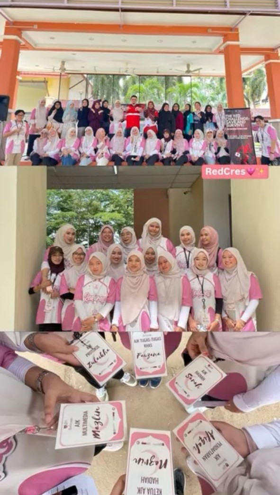
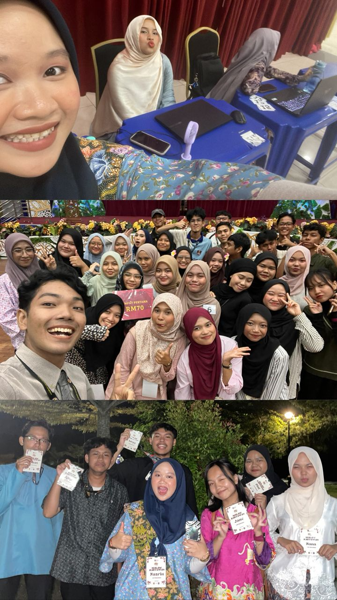
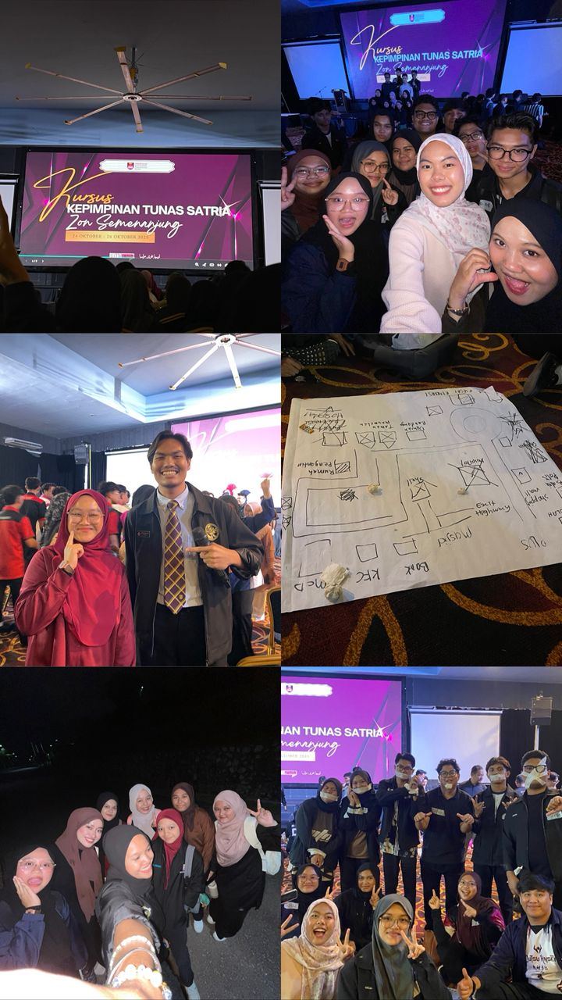

Served as a committee member for a university club program, supporting program coordination, event management, and teamwork throughout the event.


Participated in leadership development programs and club organizational management courses (KPO), developing strong leadership, communication, teamwork, and organizational management skills through active involvement and collaborative activities.
